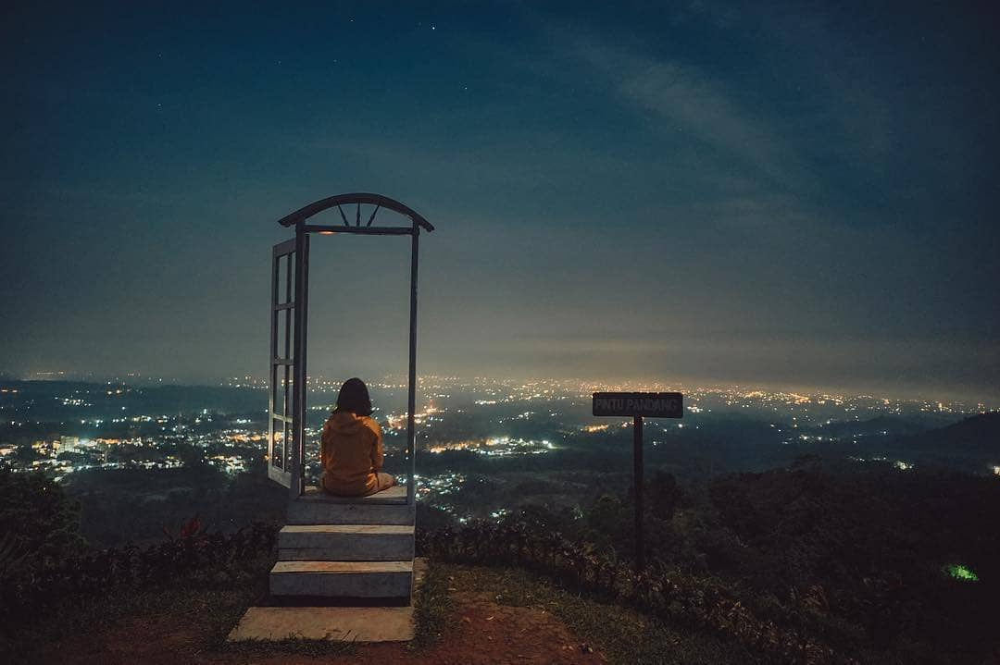
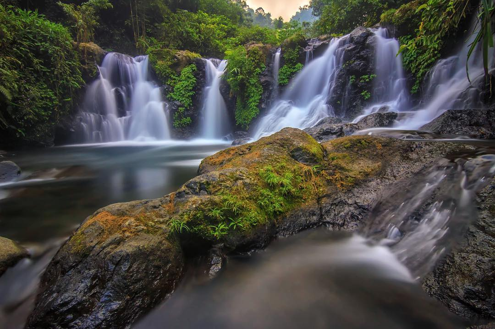
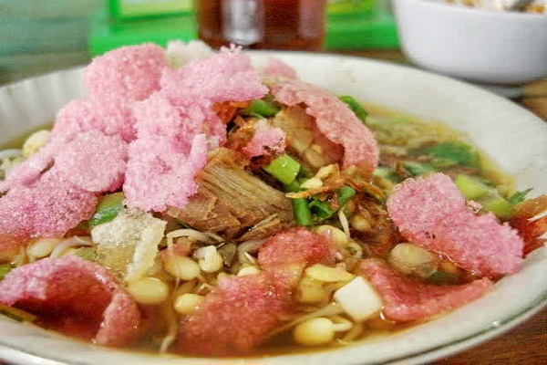
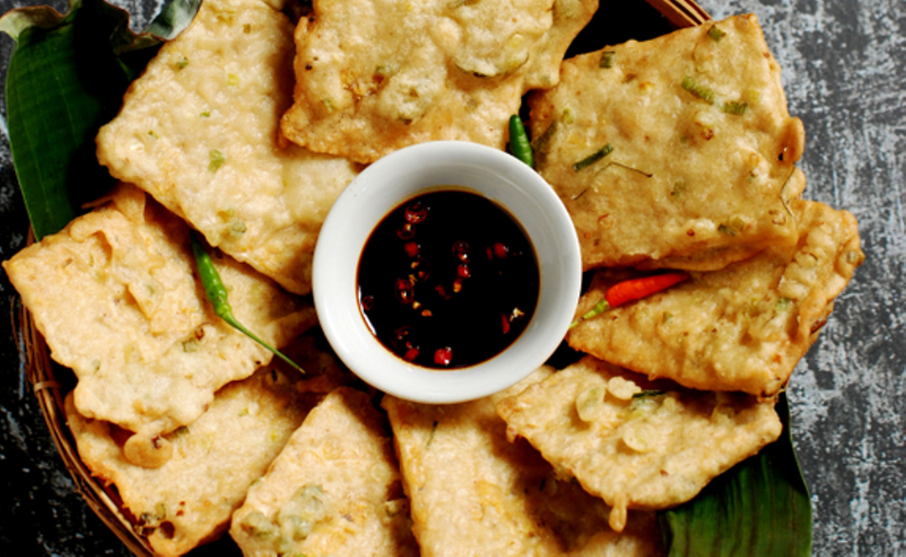

Bukit Pandang Munggang

Tidak bisa dimungkiri, Bukit Pandang Munggang menjadi destinasi wisata di Banyumas yang harus kamu kunjungi jika ingin melihat keindahan alam dan lanskap yang keren dari kota ini. Tidak hanya itu saja,
banyak spot berfoto kece yang bisa jadi pilihan background kamu, terutama saat malam hari! Tempat ini terletak di desa Wisata Ketenger RT 04/03, Baturaden. Dengan membayar tiket masuk sebesar Rp.15.000,- kita sudah bisa menikmati udara sejuk khas
pegunungan dan juga sekaligus melihat kota Purwokerto dari ketinggian.
Cukup menempuh waktu selama 30 menit saja dari pusat kota kita sudah sampai di Bukit Pandang Munggang. Objek wisata ini memang belum banyak orang yang mengetahui karena baru dibuka oleh Perum Perhutani dan jalan untuk menuju bukit harus melewati sebuah gang kecil.
Jika anda merencanakan perjalanan menuju kesana cari saja lapangan yang tepatnya di sebelah SD 2 Desa Ketenger. Didekat situ ada jalan masuk yang untuk menuju ke tempat tujuan dan anda tinggal mengikuti petunjuk yang ada.
Atau jika anda tersesat maka tanyakan saja kepada warga sekitar pasti mereka akan memberitahu dengan ramah untuk menuju ke wisata tersebut. Apabila anda sudah sampai di loket siapkan uang untuk parkir dan ticket masuk. Selebihnya anda cukup berjalan sejauh 1 Km saja dengan jalan yang cukup menanjak.
Lokasi: Desa Ketenger, Baturraden, Banyumas, Jawa Tengah
Curug Lima

Curug Lima (5) berada di Desa Baseh Kecamatan Kedungbanteng Kabupaten Banyumas. Curug ini belum lama (agak) booming karena memang aksesnya cukup sulit. Padahal lokasinya tidak jauh dari Curug Gomblang yang sudah lama dikenal dan cukup banyak pengunjungnya. Dari curug Gomblang menuju Curug Lima berjarak sekitar 1KM dan memakan waktu sekitar 1 jam dengan jalan santai.
Kamu akan mendapati air terjun dengan debit air yang cukup deras, dengan nuansa alami yang begitu kental dan atmosfer hijau yang menyegarkan di Curug Lima.
Dijamin kamu akan terpesona dengan keindahannya. Nama curug Lima mungkin diambil dari jumlah pancuran atau kanal airnya yang berjumlah 5. Yang jelas sih tempatnya masih sangat asri, dengan air jernih dan menggoda untuk nyebur. Bagi yang suka ciblonan atau berendam di air dijamin suka. Cuman memang aksesnya yang cukup berat apalagi bagi yang takut ketinggian atau tebing curam, bisa merinding di jalan
Untuk menuju ke Curug Lima, dari parkiran Curug Gomblang belok kanan, atau bisa ditanyakan saat di gerbang masuk atau di parkiran. Pengunjung juga bisa minta pemandu agar tidak nyasar karena ada beberapa pertigaan atau persimpangan kecil. Lebih amannya minta jasa pemandu saja sih.
Jangan lupa bawa bekal, di lokasi curug lima tidak ada penjual makanan / warung, warung ada di dekat parkiran yang bukanya biasanya hanya pada hari sabtu/minggu atau liburan. Ada juga didekat gerbang tiket.
Untuk masuk ke lokasi ini dikenakan tarif 3 ribu per orang dan ditambah parkir kendaraan (motor 2rb). Lokasi ini juga bisa diakses dengan jalan kaki dari Baturagung (Bendungan PLTA Baturagung terlihat dari parkiran Curug Gomblang) tapi ya lumayan jauh juga.
Lokasi: Dusun II, Baseh, Kedungbanteng, Banyumas, Jawa Tengah
Soto Sokaraja

Soto Sokaraja atau yang lebih dikenal oleh orang Banyumas dengan sebutan Sroto Sokaraja merupakan salah satu makanan khas Banyumas yang patut dicoba.
Berbeda dengan makanan soto dari daerah lain, salah satu ciri khas yang membedakan Soto Sokaraja dengan soto lainnya adalah penggunaan ketupat dan sambel yang terbuat dari kacang.
Sambel kacang ini tidak terlalu pedas, sehingga walaupun kita membubuhkan banyak sambel kacang, tidak akan terasa terlalu pedas.
Pada umumnya Soto Sokaraja dibedakan menjadi dua jenis, tergantung pada daging yang digunakan, yaitu daging sapi dan daging ayam. Kuah yang digunakan sesuai dengan dagingnya, artinya apabila menggunakan daging ayam, maka kuah yang digunakan juga kuah atau kaldu ayam. Kuah atau kaldu yang digunakan ditambahkan sedikit kunyit untuk menampilkan warna bening kekuningan. Sedangkan untuk citarasa dan keharuman aroma dapat ditambahkan daun sereh, lengkuas dan jahe. Selain daging sapi atau daging ayam, Soto Sokaraja ditambahkan dengan tauge pendek atau tauge muda, ditaburi krupuk cantir atau krupuk bawang warna-warni, dan bawang merah goreng.
Warung Soto yang terkenal dan sudah berdiri puluhan tahun serta menjadi langganan masyarakat di Sokaraja dan sekitarnya adalah Soto Kecik dan Soto Lama. Soto Kecik ini adalah salah satu warung makan yang menyediakan Soto Sokaraja dengan citarasa yang berbeda. Menurut pendapat para pelanggannya Soto Kecik ini sangat lezat. Sedangkan Soto Lama adalah warung makan yang menjual Soto Sokaraja sejak tahun 1978. Soto lama merupakan salah satu warung makan yang pernah dikunjungi oleh Presiden Republik Indonesia kala itu.Untuk dapat menikmati kelezatan kedua warung soto ini anda dapat menemukannya di pinggir jalan raya Purwokerto – Sokaraja.
Mendoan

Mendoan Adalah makanan sejenis gorengan yang berasal dari wilayah Karesidenan Banyumas, Jawa Tengah. Kata "mendoan" dianggap berasal dari Bahasa Banyumasan yaitu mendo yang berarti setengah matang atau lembek. "Mendoan" yang artinya "memasak dengan minyak panas yang banyak dengan cepat" sehingga masakan tidak benar-benar matang.
Bahan makanan yang paling sering dibuat menjadi berbagai Mendoan adalah tempe dan tahu.
Tempe mendoan mudah ditemui di warung-warung tradisional di daerah Karesidenan Banyumas seperti Purbalingga, Banjarnegara, Cilacap dan Banyumas. Untuk wilayah Banyumas para wisatawan bisa membeli oleh-oleh makanan mendoan tempe di daerah sawangan, kota Purwokerto. Rasa yang enak membuat makanan ini begitu dikenal hingga keluar daerah Banyumas.
Di kota-kota lain di Jawa tengah seperti Semarang, mendoan lebih merujuk ke tempe goreng tepung atau di daerah lain seperti kabupaten Wonosobo di sebut tempe kemul yang berbentuk tipis itu hanya irisan, Hal ini sedikit menimbulkan kerancuan terutama bagi pendatang dari Jawa Tengah bagian barat.
Mendoan Purwokerto berbeda dengan mendoan dari beberapa kota di wilayah Jawa Tengah.
Mendoan khas Purwokerto ini lebih nikmat apabila disajikan dengan keadaan hangat. Makanan ini dapat dibuat tanpa memerhatikan besarnya tempe atau banyaknya tepung, mendoan tanpa tempe atau mendoan dari bekas sisa adonan tepung juga nikmat disantap.
Biasanya mendoan disajikan sebagai makanan pendamping ketika memesan Sroto Sokaraja.